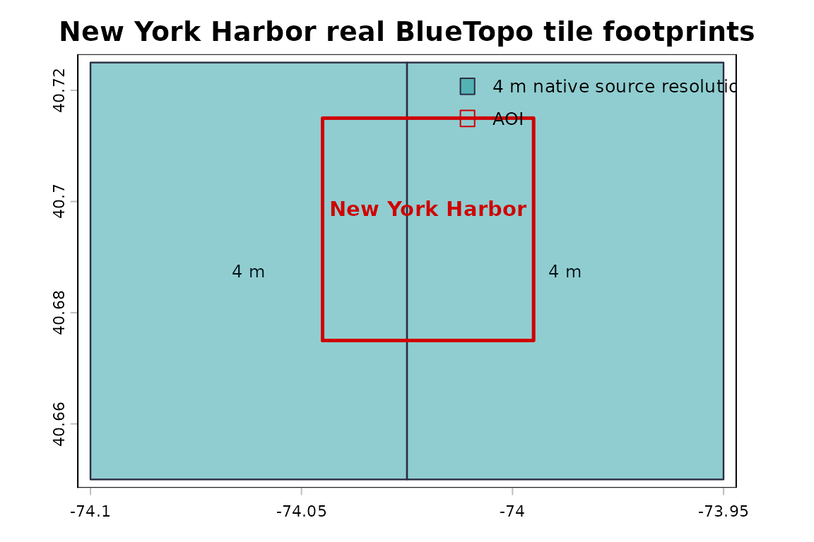
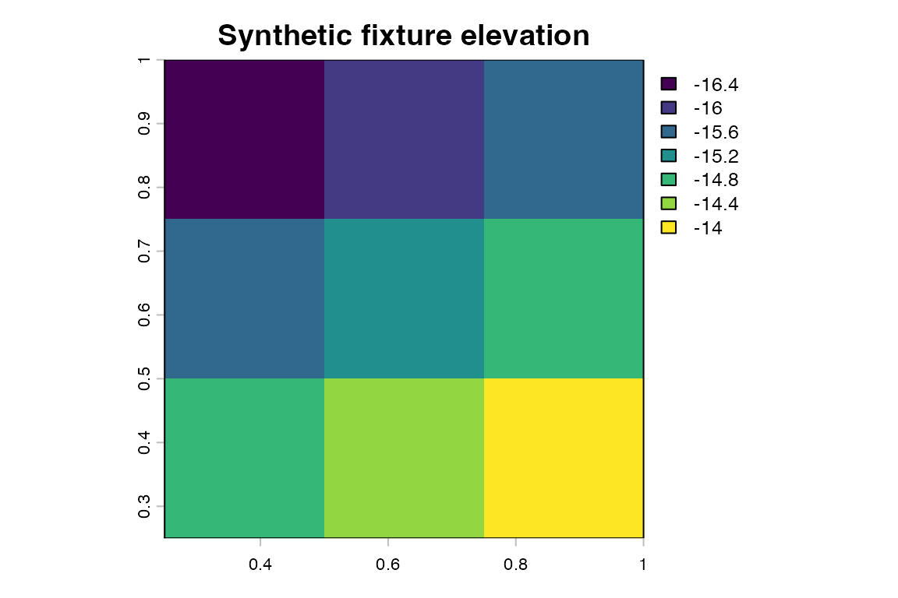

This page uses real NOAA BlueTopo source tiles when rendered for the public pkgdown site. This example uses actual NOAA BlueTopo source tiles downloaded from the public NOAA National Bathymetric Source bucket during the pkgdown build.
BlueTopo is not for navigation. bluertopo performs no
vertical-datum conversion. The example downloads are intentionally
small. Normal package tests use synthetic fixtures; the public site uses
real data. bluertopo is not affiliated with, endorsed by,
or supported by NOAA.
What The Examples Show
gallery <- data.frame(
Example = c(
"Discover tiles and coverage",
"Download original assets",
"Extract elevation with terra",
"Compare resolution policies",
"Mixed grids and output grid",
"Layers and RAT metadata"
),
`Main function` = c(
"bluertopo_tiles()",
"bluertopo_download()",
"bluertopo()",
"bluertopo_tiles()",
"bluertopo()",
"bluertopo()"
),
Shows = c(
"AOI intersection, selected footprints, coverage diagnostics",
"Verified NOAA GeoTIFF and RAT sidecar assets",
"File-backed terra object and provenance",
"Native source-resolution selection effects",
"SpatRasterCollection versus explicit output grid",
"Elevation, uncertainty, contributor IDs, and RAT metadata"
),
`Output type` = c(
"Tables and footprint figure",
"Manifest tables and status figure",
"terra summary tables and raster figure",
"Policy comparison tables and maps",
"Grid summary tables and raster figure",
"Layer/RAT tables and raster figures"
),
check.names = FALSE
)
bt_display_table(gallery)| Example | Main function | Shows | Output type |
|---|---|---|---|
| Discover tiles and coverage | bluertopo_tiles() | AOI intersection, selected footprints, coverage diagnostics | Tables and footprint figure |
| Download original assets | bluertopo_download() | Verified NOAA GeoTIFF and RAT sidecar assets | Manifest tables and status figure |
| Extract elevation with terra | bluertopo() | File-backed terra object and provenance | terra summary tables and raster figure |
| Compare resolution policies | bluertopo_tiles() | Native source-resolution selection effects | Policy comparison tables and maps |
| Mixed grids and output grid | bluertopo() | SpatRasterCollection versus explicit output grid | Grid summary tables and raster figure |
| Layers and RAT metadata | bluertopo() | Elevation, uncertainty, contributor IDs, and RAT metadata | Layer/RAT tables and raster figures |
NOAA Tile Footprints
bt_plot_tiles(real_tiles, real_aoi, main = "Actual NOAA BlueTopo tile footprints")
Actual NOAA BlueTopo source tiles: AOI outline and selected tile footprints by native source resolution.
bt_display_table(bt_tile_table(real_tiles, include_urls = TRUE))| tile_id | resolution_m | utm_zone | delivered_date | intersection_area_m2 | intersection_fraction | selection_rank | selection_reason | fallback | geotiff_url | rat_url |
|---|---|---|---|---|---|---|---|---|---|---|
| BH4SH55P | 4 | 17 | 2024-12-16 16:38:56 | 1119850 | 0.018 | 1 | native | FALSE | noaa-ocs-nationalbathymetry-pds.s3.amazonaws.com/BlueTopo/BH4SH55P/BlueTopo_BH4SH55P_20241212.tiff | noaa-ocs-nationalbathymetry-pds.s3.amazonaws.com/BlueTopo/BH4SH55P/BlueTopo_BH4SH55P_20241212.tiff.aux.xml |
| BH4SJ55P | 4 | 17 | 2024-10-07 15:42:50 | 2239700 | 0.036 | 2 | native | FALSE | noaa-ocs-nationalbathymetry-pds.s3.amazonaws.com/BlueTopo/BH4SJ55P/BlueTopo_BH4SJ55P_20241004.tiff | noaa-ocs-nationalbathymetry-pds.s3.amazonaws.com/BlueTopo/BH4SJ55P/BlueTopo_BH4SJ55P_20241004.tiff.aux.xml |
| BF2H62K7 | 8 | 17 | 2024-12-16 16:37:25 | 6718416 | 0.053 | 3 | native | FALSE | noaa-ocs-nationalbathymetry-pds.s3.amazonaws.com/BlueTopo/BF2H62K7/BlueTopo_BF2H62K7_20241212.tiff | noaa-ocs-nationalbathymetry-pds.s3.amazonaws.com/BlueTopo/BF2H62K7/BlueTopo_BF2H62K7_20241212.tiff.aux.xml |
Terra Preview
preview <- bluertopo(
real_aoi,
layers = "elevation",
resolution = "native",
coverage = "fill",
details = TRUE,
progress = FALSE,
quiet = TRUE
)
preview_raster <- bt_plot_first_raster(preview$data, main = "NOAA BlueTopo elevation")
terra::plot(terra::project(real_aoi, terra::crs(preview_raster)), add = TRUE, border = "#d00000", lwd = 2)
Actual NOAA BlueTopo source data: elevation raster preview from verified source GeoTIFFs.
resolution selects native source tiles.
output_resolution is used only when the user explicitly
requests an output grid.